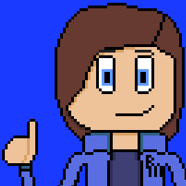
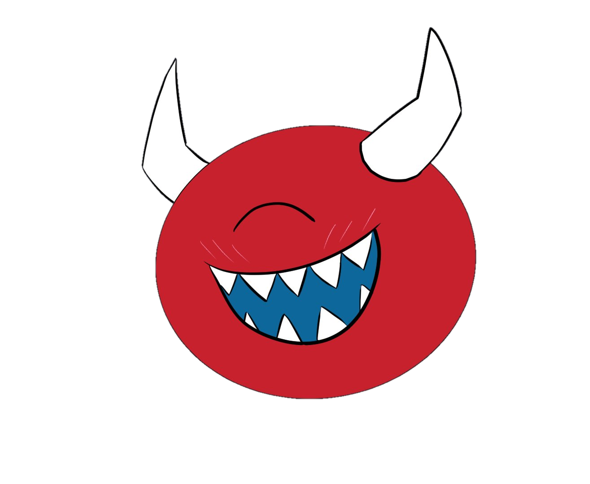
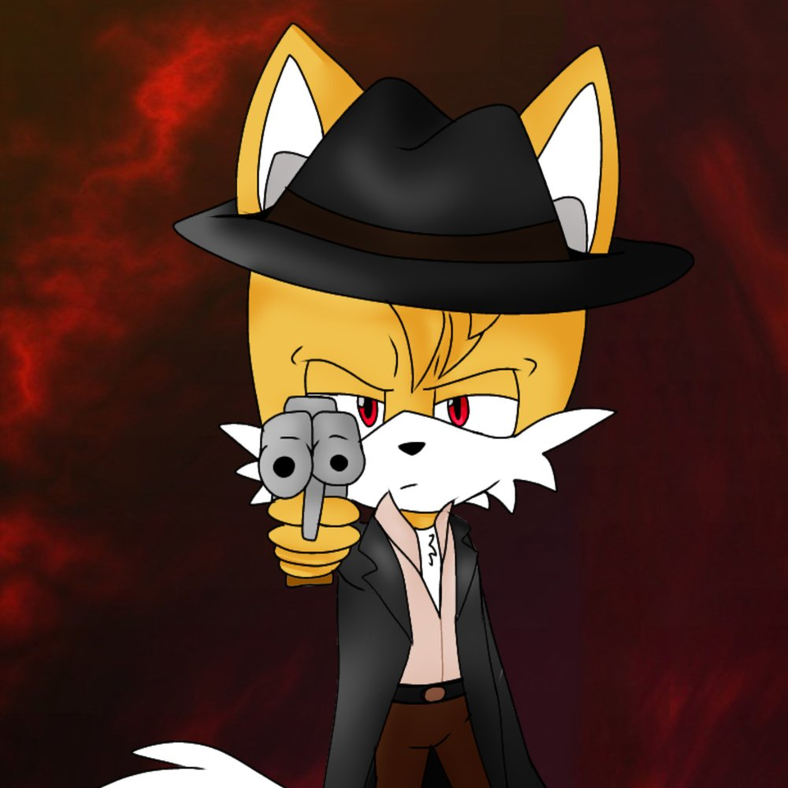

Name: KrazeeTobi
Nickname(s): Tobi, Tobison, Tobinnson, Binnson
Likes: DOOM, Sonic (especially Tails), Bluey, Mario, Pokemon, Preservation
Hi, I'm KrazeeTobi. I'm 18 and I live somewhere that any American would call the home of taxes, tea, chips, whatever. Yes, it's the UK, specifically England. I've been into Sonic since I was probably about 5 or 6? I don't recall. I had a GBA with Sonic Advance 3 if that says anything about how old I am. Anyway, I've also been a fan of DOOM since ~2016, and very recently become a fan of Bluey, approximately around November 17th, 2021. I've also been active on Roblox and Minecraft since December 2011 and May 2012 respectively.

Name: ProperMax
Nickname(s): Max
Likes: Sonic, Super Smash Bros., Super Mario, Mario Kart, Source Engine games, DOOM, Emulating games, Horror, Game mods, LEGO Universe/Darkflame Universe
Hello, 'pro gamer' who's balls are too big for his own good. Name's ProperMax, I'm from the Ununited States of America, and it's a bit debated when I met Tobi, but it's agreed to be roughly around late 2014 to late 2015. I've been a fan of Sonic, Mario, SSB, MK, LU/DU, and Horror since around 4-5, Source Engine when I was 8, heard of modding games and emulation between 8-9 and DOOM when I was around 9-10, but didn't really become a fan until just recently. I used to have an original copy of Sonic Unleashed for the Wii, which introduced me to Sonic, and started playing Minecraft in 2012 if that says anything.

Name: SnakieJakie
Nickname(s): Jakie, Snakie
Likes: Boomer Shooters, 3d platformers, GZDoom modding, Strife, old MIDI and tracker music, dynamic lighting
I made Nirvana look good in Doom 2. In all seriously, I am a guy who is obsessed with the Doom engine. I am a ZDoom veteran, been with it since around 2013 or 2014-ish. Although I didn't make a ZDoom account untill 2020. Play Strife kids.

Name: BulletTimeTails
Nickname(s): BTT, Tails, Bullet Time
Likes: Sonic, Boomer Shooters, Resident Evil, Devil May Cry, Final Fantasy VII, Collecting PS1 Games, Making maps for Doom, HeXen
Sup? I'm BulletTimeTails, I'm from Portugal, I used to be a Google+ user from 2014 until it shut down in 2019, I joined Twitter in 2018 to migrate there and in 2019 I met Tobi on Twitter. Since I was a kid around 5 years old, I've been more of a fan of the PS1, my favorite games in that system are Final Fantasy VII (Which I played when I was 6 years old), Metal Gear Solid (Which I played when I was 10 then later revisited it when I was 17 in this year) and Resident Evil 2 (When I was around 11). I played Doom for the first time on the PlayStation version as well, the PS1 version of Doom left a big impact in me in fact to a point I became obsessed around 2013 when I discovered the beauty of ZDoom and GZDoom and the mods around it with a Total Conversion Wolfenstein 3D Mod for Doom. I wouldn't get into modding Doom seriously until 2019 with my project "Doom Hell Unleashed." My first exposure to Sonic was Tails Adventure and Sonic The Fighters from the Sonic Gems Collection for the PlayStation 2, I loved Tails when I was a kid which is basically why Tails nowadays is my persona online.